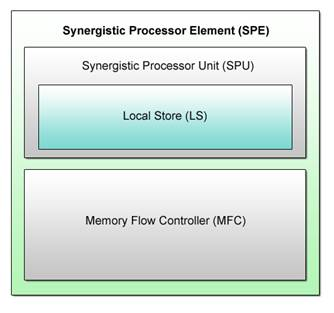
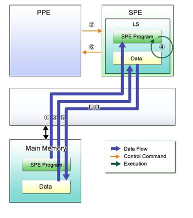

Conventional CPU architecture provides a certain consistent level of performance even if they are used without much consideration given to their architecture. The Cell differs from these CPUs not only in its architectural structure but also because it requires architecture-conscious programming in order to gain the full advantages of its outstanding computational capability.
Before proceeding to the programming details described in Chapter 2 and onwards, let us briefly review in sequence why and on what design concept the Cell was developed, how it is configured, and what kind of programming techniques are needed as a result of its differences from other CPUs.
Table 1.1: Structure of Chapter 1
|
Section |
Title |
Description |
|
Section 1.1 |
Backgrounds of Cell Development |
Traces the evolutionary transition of CPU technology up to the emergence of the Cell. |
|
Section 1.2 |
Structure of Cell |
Focuses on the Cell’s basic physical architecture. |
|
Section 1.3 |
Cell Programming Overview |
Explains the unique aspects of Cell programming. |
|
Section 1.4 |
Cell Programming Environment |
Provides the environmental requirements for Cell programming. |
This section outlines the backgrounds of the development of the CPU called the Cell, together with an overview of its unique processor structure.
Enhancement of CPU processing power and speed has been a priority issue in the past several years due to the widespread and pervasive use of multimedia applications, as well as the advent of 3D games and other advanced video applications that demand higher-speed processing of massive audio/video data to offer higher-quality entertainment.
Conventional approaches to satisfy this demand counted on the improvement of the performance of the core* singularly used in each CPU. However, they soon proved to have limitations – the CPU design became much more complex, causing such problems as increases in power consumption, overheating and manufacturing cost.
That’s why CPU manufacturers set about developing multi-core configurations that allow multiple cores to run in parallel on a single chip to realize further performance upgrades.
* Core (or Processor Core): A combination of a computational unit, register, data circuit and others necessary for CPU operation. A single-core CPU incorporates only one core.
Cell uses multi-core CPU architecture. As shown in Table 1.2, multi-core CPUs can be categorized into two configurations, namely the “homogeneous multi-core processor configuration” and the “heterogeneous multi-core processor configuration”.
Table 1.2: Multi-Core CPU Classification
|
Homogeneous Multi-Core Processor Configuration |
Heterogeneous Multi-Core Processor Configuration |
|
|
|
|
Multiple cores of the same type are implemented in one CPU. |
Multiple cores of different types are implemented in one CPU. |
Of these two, the Cell employs the heterogeneous multi-core processor configuration. Instead of conventional multi-application cores, the Cell uses two types of cores optimized for different applications: a large-scale control-intensive processor core that excels in handling frequent thread switching and thus is suited for use with the operating system, and a simple, small-scale compute-intensive processor core that addresses multimedia processing. With this configuration, each core can maintain its processing performance. The core structure can also be simplified drastically.
To get the most out of the Cell’s incredible computational capability, it is necessary for each programmer to consider the differences between the two processor cores and utilize them appropriately in a way to suit the intended application.
As explained in the previous section, the Cell is a heterogeneous multi-core processor comprised of control-intensive processor and compute-intensive SIMD processor cores, each with its own distinguishing features. Now, let us look into its physical architecture.
Fig. 1.1 shows the structural diagram of the Cell.
Fig. 1.1: Cell Structure Diagram
The Cell consists of one control-intensive processor core (PPE) and eight compute-intensive processor cores (SPEs). A high-speed bus called the Element Interconnect Bus (EIB) is used for connecting these processor cores within the Cell. The EIB also provides connections to main memory and external I/O devices, making it possible for processor cores to access data.
Details of each processor core are described below.
The PPE implemented in the Cell is a general-purpose processor with functions equivalent to those offered by the 64-bit PowerPC architecture. Like conventional processors, the PPE allows execution of the operating system and applications. It also performs input/output control when the operating system accesses the main memory and external devices, and provides control over SPEs. Accordingly, the PPE can be defined as a “control-intensive processor” dedicated mainly to processing control.
The PPE is structured as shown in Fig. 1.2.
Fig. 1.2: PPE Components
(1) PowerPC Processor Unit (PPU)
The PPU is the processing unit in the PPE. It is equipped with the 64bit PowerPC architecture instruction set. It also includes a primary cache comprised of a 32KB instruction cache and a 32KB data cache.
(2) PowerPC Processor Storage Subsystem (PPSS)
The PPSS controls access to the main memory from the PPU. It provides high-speed access to memory, via a 512KB secondary cache..
The Cell incorporates eight processor cores called the SPEs. The SPEs are less complex processing units than the PPE as they are not designed to perform control-intensive tasks. The SPEs iterates simple operations necessary for processing multimedia data. The Cell delivers an exceptional computational capability by effectively using these compute-intensive processor cores.
The SPE structure is shown in Fig. 1.3.

Fig. 1.3: SPE Components
(1) Synergistic Processor Unit (SPU)
Each SPE incorporates its own SPU to perform its allocated computational task, while each SPU has a dedicated memory called the LS. The SPUs use a unique instruction set designed specifically for their operations.
(2) Local Store (LS)
The LS refers to a 256KB memory associated with each SPU. It is the only memory that can be referenced directly from the SPU. A special controller described as the MFC in the next paragraph must be used to make the main memory and LS memories of other SPUs accessible.
(3) Memory Flow Controller (MFC)
The MFC is a data transfer unit that enables data transfer between an SPU and the main memory or other SPUs. The SPUs send data transfer requests to the MFC via a channel interface.
The Cell provides high-speed processing by taking advantage of two different processor cores, each optimized for its particular functions. Programming with this CPU design, therefore, makes it essential to assign control functions to the general-purpose processor called the PPE and calculation functions to the computation engine comprised of multiple SPEs.
This section describes a basic Cell programming model after briefly explaining the tips on programming using the PPE and SPEs.
Programming using the PPE only does not differ from conventional programming on Linux. Write programs in C and execute.
However, such programs cannot benefit fully from the Cell’s intrinsic potential. In order to maximize the performance of the Cell, attention must be paid to the following two points.
(1) Operate multiple SPEs in parallel to maximize operations that can be executed in a certain time unit.
(2) Perform SIMD parallelization on each SPE to maximize operations that can be executed per instruction.
All in all, how the SPEs are utilized is particularly crucial to Cell programming.
A variety of Cell programming models have been presented up till now. The most basic among them is shown in Fig. 1-4, where the PPE is used for execution of the main program and the SPEs for execution of a sub-program.
Fig. 1.4: Basic Cell Programming Model
The main program executed on the PPE (hereinafter called the PPE program) divides a sequence of processes or data and distributes a segment to every SPE for processing by the sub-program running on the SPEs (hereinafter called the SPE program). Upon completion of the requested operation, the SPE program returns the processed result to the PPE program.
In line with the Cell architecture, let’s take a look at how PPE and SPE programs are executed, together with how necessary data is transmitted and received.

Fig. 1.5: Program Control and Data Flow
(1) (PPE Program) Loads the SPE program to the LS.
(2) (PPE Program) Instructs the SPEs to execute the SPE program.
(3) (SPE Program) Transfers required data from the main memory to the LS.
(4) (SPE Program) Processes the received data in accordance with the requirements.
(5) (SPE Program) Transfers the processed result from the LS to the main memory.
(6) (SPE Program) Notifies the PPE program of the termination of processing.
Remember that the SPE program, as well as the data used for processing, is transferred between the main memory and the LS via the MFC. PPE and SPE program execution will be explained in more detail in Chapter 3.
The uniqueness of Cell architecture and programming has been reviewed and any moment now, we can start practicing real programming on the Cell, following the guidance provided in the succeeding chapters.
Before doing so, however, let us touch on the computing environment for working on the questions and sample solutions in these chapters.
Programs described in this tutorial can be executed in the following environment.
(1) Necessary hardware: PS3
(2) Supported OS: Yellow Dog Linux for PS3
Please refer to the following URL for details.
URL: TBD
In summary, this chapter has covered introductory information on Cell programming, including:
(1) Backgrounds of Cell Development
(2) Structure of Cell
(3) Cell Programming Overview
(4) Cell Programming Environment
Major Points of Discussion in Section 1.1: Backgrounds of Cell Development
Cell technology has been developed as a solution to the need for higher performance. The Cell is a heterogeneous multi-core processor comprised of a control-intensive processor core and compute-intensive processor cores serving different functions.
Major Points of Discussion in Section 1.2: Structure of Cell
Physically, the Cell includes one control-intensive processor core (PPE) and eight compute-intensive processor cores (SPEs) that iterate simple operations necessary for processing multimedia applications.
Major Points of Discussion in Section 1.3: Cell Programming Overview
The PPE shares program processing with the SPEs. With the basic programming model described in this section, program processing is further shared among the SPEs that perform SIMD calculations to maximize the Cell’s computational performance.
Major Points of Discussion in Section 1.4: Cell Programming Environment
Refer to this section for how to set up the operating environment for Cell programming.
Now you are ready to proceed to Chapter 2 where you can start practicing actual Cell programming. Read on, keeping in mind what you have studied in this chapter about the Cell architecture and program processing flow.